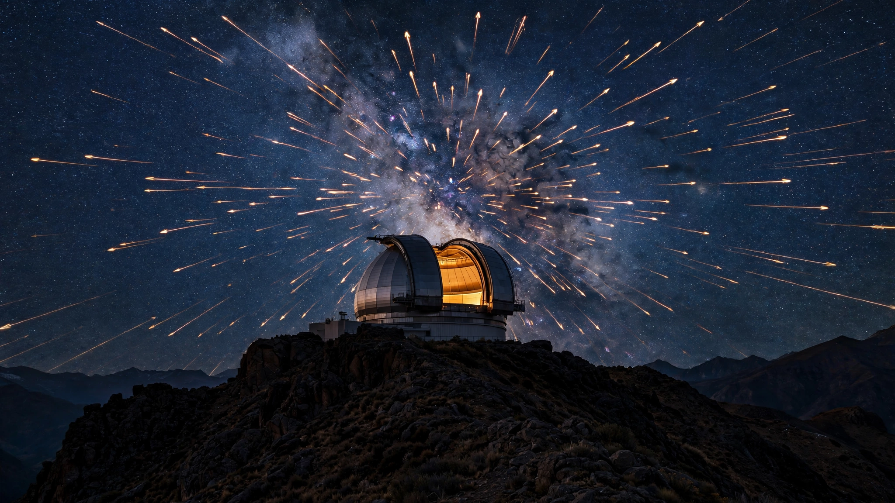

Rubin Observatory Will Discover 90,000 Near-Earth Asteroids. The Tracking System Was Built for 16 Per Night.
The most powerful survey telescope ever constructed began its decade-long scan of the sky on June 30. It will flood the global asteroid confirmation network with 8× more candidates than the system can process. The objects most likely to be lost are the ones approaching fastest.

On the night of June 30, 2026, the Vera C. Rubin Observatory in Chile pointed its 8.4-meter telescope toward the southern sky and began what will be the most ambitious astronomical survey in history. The Legacy Survey of Space and Time will photograph the entire visible sky every three nights for a decade, generating 20 terabytes of data each night, cataloging 20 billion galaxies, and discovering roughly 5 million new objects in our solar system. Among those objects will be approximately 90,000 near-Earth asteroids that nobody has ever seen before.
It sounds like a triumph, and it largely is. But a peer-reviewed simulation published in the Astronomical Journal in 2025 reveals a problem buried inside the success: the global system that confirms whether a newly spotted asteroid is actually headed toward Earth was built to handle about 16 candidates per night, and Rubin will submit 129 without anyone having expanded the network to match.
The 129-Per-Night Problem
Wagg et al. (2025) ran detailed simulations of how Rubin's discovery rate will interact with the Minor Planet Center's NEO Confirmation Page, the international clearinghouse where newly spotted moving objects get posted for follow-up telescopes around the world to observe, confirm, and track. In its first year of survey operations, Rubin will typically contribute about 129 new objects to the confirmation page every single night, an eightfold increase over the pre-Rubin baseline of roughly 16 candidates per night from all other surveys combined.
That increase would be manageable if every candidate were a genuine near-Earth threat, but simulations show only 8.3 percent of Rubin's nightly submissions will actually be near-Earth objects. Fully 91.7 percent are undiscovered main-belt asteroids: real objects orbiting safely between Mars and Jupiter, scientifically valuable but posing zero collision risk. A dot moving across an image frame could be a 200-meter rock three months from Earth impact or a 50-meter pebble safely circling the Sun 300 million kilometers away, and in a single night's data they look identical.
To determine the difference, ground-based follow-up telescopes must observe each candidate across multiple nights, building an orbital arc that reveals the object's trajectory. Before Rubin, the worldwide network of professional and amateur follow-up observers could keep pace with the roughly 16 candidates posted each night. That capacity did not multiply by eight when Rubin opened its dome.
An Algorithm That Helps but Does Not Solve
The Wagg team anticipated the bottleneck and developed a prioritization algorithm. Because Rubin revisits each patch of sky every three nights, many of the objects it detects will reappear in subsequent observations without anyone else needing to look. The algorithm predicts, with 68 percent accuracy, whether Rubin itself will "self-recover" any given candidate on a future pass, allowing external follow-up resources to be deprioritized for those objects.
With the algorithm running, the nightly follow-up list drops from 129 to 64 candidates, still four times current capacity. Additional filters based on brightness, speed of motion across the sky, and distance from the ecliptic plane can push the number lower, but each filter carries a tradeoff: every candidate you remove from the follow-up list is one you are betting is not dangerous.
At the 8.3 percent purity rate, those 64 candidates contain roughly 5.3 real near-Earth objects per night, and over a 200-night observing year, that totals approximately 1,060 real NEOs that need external follow-up but may not receive it promptly, depending on how many follow-up telescopes can be brought online. Over a decade, the lag could affect the orbital characterization of thousands of objects whose trajectories remain incompletely known.
What $739 Million Built
Rubin Observatory cost $571 million in NSF construction funding, rebaselined from an original $473 million after COVID-19 delays, plus $168 million from the Department of Energy for the LSST Camera built at SLAC National Accelerator Laboratory: a 3,200-megapixel sensor array, the largest digital camera ever constructed for astronomy, with a front lens more than five feet across. Combined construction comes to approximately $739 million, and at roughly $70 million per year in operations the 10-year lifecycle cost reaches around $1.44 billion.
For that investment, Rubin will catalog more new solar system objects than every previous telescope in history combined, and the commissioning data has already proven the point. During its first year of pre-survey operations, even before the formal LSST began, Rubin discovered more than 30,000 previously unknown solar system objects, including 11,000 confirmed new asteroids, 33 near-Earth objects, and 380 trans-Neptunian objects orbiting beyond Neptune, a haul that scientists at the Minor Planet Center noted Rubin will replicate every two to three nights once the full survey ramps up.
A full yield simulation published in early 2025 projects LSST will discover 127,000 near-Earth objects over its decade of operation, of which roughly 90,000 will be genuinely new additions to the catalog rather than re-detections of already-known objects. It will achieve 91 percent completeness for NEOs larger than 1 kilometer in diameter and 72.4 percent completeness for those larger than 140 meters. It will identify 3,152 potentially hazardous asteroids out of an estimated 4,333 total, a 73 percent haul of the objects both large enough and close enough to Earth's orbit to pose a real collision threat. These numbers represent six times more NEO discoveries than the Catalina Sky Survey, the current record holder at 16,112 total finds over two decades of operation.
A Congressional Mandate, 18 Years Late
In 2005, Congress passed the George E. Brown Jr. Near-Earth Object Survey Act, directing NASA to discover and catalog 90 percent of all near-Earth objects larger than 140 meters in diameter by 2020, a size class large enough to destroy a city on impact. Behind the mandate sat a calculation worth stating plainly: we know roughly how many of these objects exist, we know roughly how many we have found, and the gap between those numbers represents a probability of surprise that Congress decided was unacceptable.
That deadline came and went without ceremony. By 2020, approximately 38 percent of estimated 140-meter-class NEOs had been cataloged, according to NASA JPL's NEO Surveyor Known Object Model, and by the end of 2022 the figure had crept to about 44 percent. As of December 2024, CNEOS lists 11,167 known NEAs larger than 140 meters out of an estimated total population of 25,000 to 35,000.
Reaching 90 percent completeness now depends on two instruments operating in parallel: Rubin Observatory, which started its survey on June 30, and NASA's NEO Surveyor, a dedicated infrared asteroid-hunting space telescope launching no earlier than September 2027 at a development cost of $1.2 billion plus a $100 million Falcon 9 ride. NEO Surveyor's own projections call for cataloging two-thirds of 140-meter NEOs within five years of launch, reaching 76 percent combined completeness by roughly 2033, but the 90 percent target will not arrive until 2038 at the earliest, making the congressional mandate approximately 18 years late.
The Marginal Cost Paradox
Rubin was not built for planetary defense but for astrophysics: mapping dark matter, measuring dark energy, studying the Milky Way, observing transient phenomena across the full sky every three nights. Finding near-Earth asteroids is a byproduct of pointing the most sensitive wide-field camera ever built at the sky and photographing everything that moves, which makes the economics unusual in a way that complicates how we should think about funding planetary defense.
NASA's NEO Surveyor, purpose-built for finding dangerous asteroids, will cost approximately $1.3 billion in total and is projected to discover on the order of 15,000 new 140-meter-class NEOs, working out to roughly $87,000 per large threatening asteroid found. Rubin's cost per newly discovered NEO, counting all sizes, runs about $16,000 across its lifecycle, but because Rubin would operate regardless of whether asteroids existed, the marginal cost of its planetary defense contribution is effectively zero: it finds city-killers for free, on the side, while investigating the expansion rate of the universe.
NEO Surveyor remains the more critical instrument for planetary defense because it operates in infrared wavelengths that reveal an asteroid's size and composition, not just its position in the sky. Rubin sees reflected sunlight, so a small bright asteroid and a large dark one can appear identical in optical data, and NEO Surveyor resolves exactly that ambiguity. Both instruments are complementary and both are necessary, but the cost math is hard to ignore: the telescope that does planetary defense as an afterthought will discover more threatening objects in total than the one built specifically for the job.
The Fast-Approach Blind Spot
The follow-up bottleneck is not an equal-opportunity problem. Rubin's three-night cadence means it will naturally self-recover most slow-moving objects simply by re-observing them when the telescope returns to the same patch of sky. Objects on wide, lazy orbits get multiple chances to be detected, measured, and tracked. The system works for them.
It fails for exactly the objects that matter most: fast-approaching NEOs on short-warning trajectories. An asteroid on a collision course with Earth does not drift slowly across the sky but moves rapidly, covering large angular distances between observations, potentially exiting Rubin's field of view before the telescope returns three nights later. Fast movers are the objects that require immediate external follow-up, and they are precisely the ones most likely to be buried in a queue of 129 candidates that a follow-up system built for 16 cannot clear in time.
Consider what happened in Chelyabinsk. An asteroid approximately 20 meters in diameter exploded over Russia in February 2013, injuring more than 1,500 people, and no telescope detected it beforehand because it approached from the direction of the Sun, where no ground-based survey can look. A 140-meter asteroid on a two-week collision trajectory approaching from a visible part of the sky, by contrast, would show up in Rubin's nightly data as one candidate among 128 others, and if follow-up telescopes cannot reach it within one to two nights, its orbital arc remains unconstrained, its impact probability cannot be calculated, and the warning system that Congress mandated in 2005 produces no warning at all.
Limitations
Several qualifications apply to these projections. Wagg et al.'s 129-per-night figure comes from simulations, not from observed data; Rubin just began full survey operations on June 30, 2026, and real-world submission rates may differ from modeled expectations. Their self-recovery algorithm is under active development and may improve well beyond the 68 percent accuracy reported in the paper. Beyond the algorithm, the global follow-up community is aware of the incoming surge and is working to expand capacity: new robotic telescope networks, improved scheduling algorithms, and integration with commercial satellite observation services could narrow the gap before it becomes acute.
Completeness estimates for the 140-meter NEO population also vary by study, with the 25,000-to-35,000 total range reflecting different assumed size-brightness relationships and albedo distributions; the actual population could sit at the low end, meaning current catalogs are more complete than 44 percent, or at the high end, meaning the gap is worse than stated here.
Cost comparisons between Rubin and NEO Surveyor are apples-to-oranges, since Rubin is a multi-purpose observatory whose NEO discoveries are incidental, and attributing its full cost to planetary defense overstates the expense per discovery. NEO Surveyor provides infrared characterization that Rubin cannot replicate, enabling the size and composition measurements needed for deflection planning, so counting raw NEO discoveries without accounting for data quality differences understates what the dedicated mission delivers.
What You Can Do
If you operate a follow-up telescope: Adopt the Wagg et al. prioritization algorithms immediately. Their self-recovery prediction filter halves the nightly follow-up queue, and the code is publicly available. Even modest adoption across a dozen Southern Hemisphere observatories would move the bottleneck from critical to manageable.
If you fund science infrastructure: Southern Hemisphere follow-up coverage is the single cheapest bottleneck to break in planetary defense right now. A network of 10 to 15 robotic 1-meter-class telescopes distributed across Chile, Australia, and South Africa would cost $50 million to $100 million total, a rounding error next to the $1.44 billion detection system already running and the $1.3 billion space mission launching in 2027.
If you want to track the problem yourself: Bookmark the Minor Planet Center's NEO Confirmation Page. When the queue consistently shows 80 or more unconfirmed candidates, the bottleneck is real and visible. Planetary defense has bipartisan congressional support and negligible cost relative to the federal budget. One letter to a representative in an election year carries weight.
The Bottom Line
Humanity just activated the most powerful asteroid-finding machine ever built. Rubin discovered 30,000 new solar system objects during its commissioning year and will find 90,000 near-Earth asteroids over the next decade, tripling the known population and bringing the census of city-killing 140-meter objects from 44 percent to roughly 72 percent complete, all as a byproduct of photographing 20 billion galaxies.
Detection is not defense. Finding an asteroid is step one of a five-step chain: detection, confirmation, orbit determination, impact probability, and deflection planning. Rubin supercharges step one while steps two through four depend on a follow-up network about to receive eight times more work than it was designed to absorb. Astronomers published the bottleneck math before the telescope opened its dome. Whether anyone expands the confirmation system to match is no longer a technical question. It is a funding one.